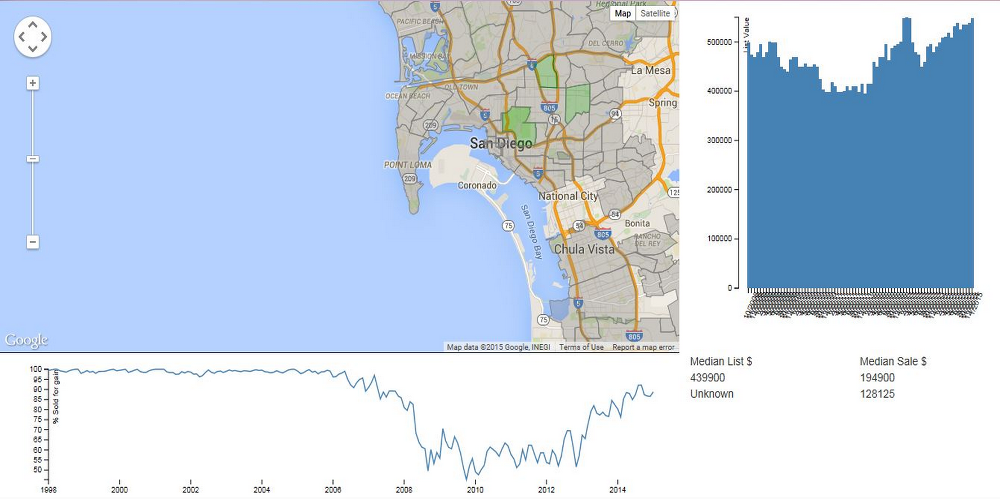
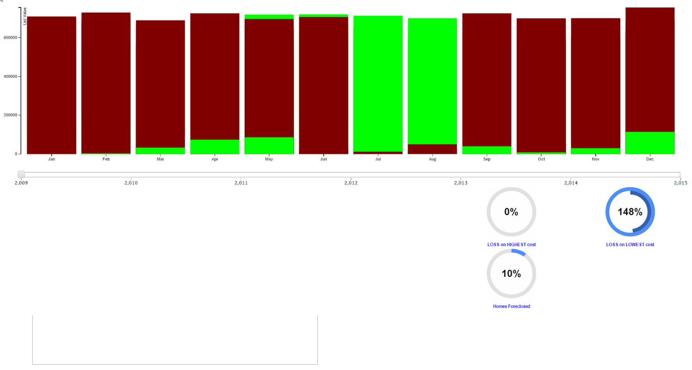
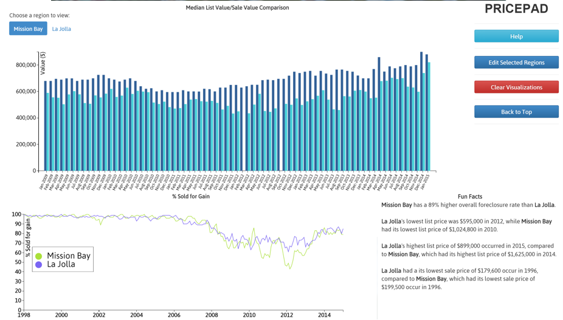
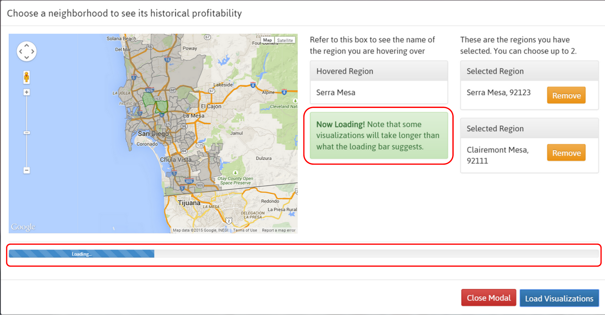
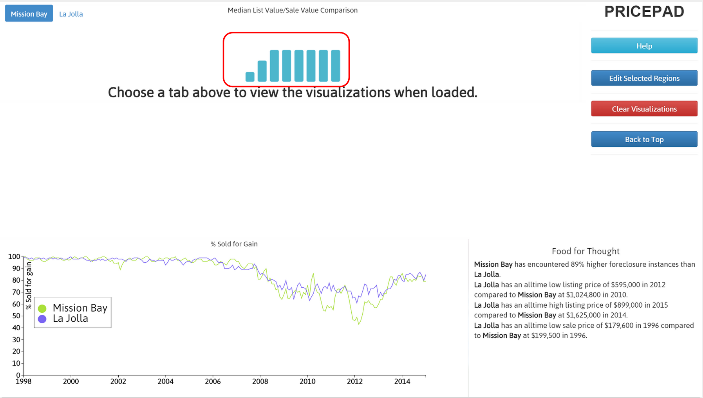
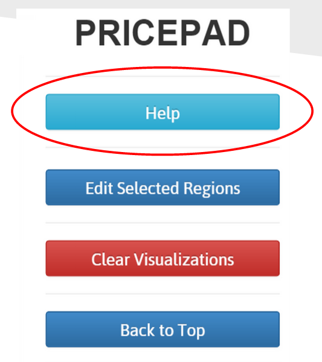
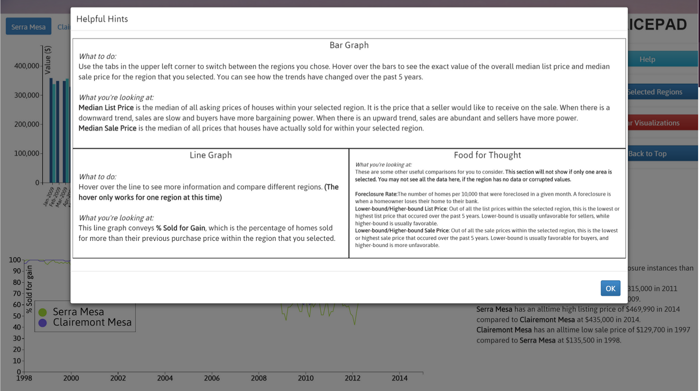
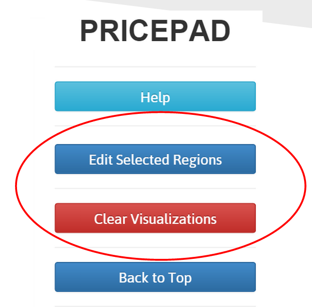
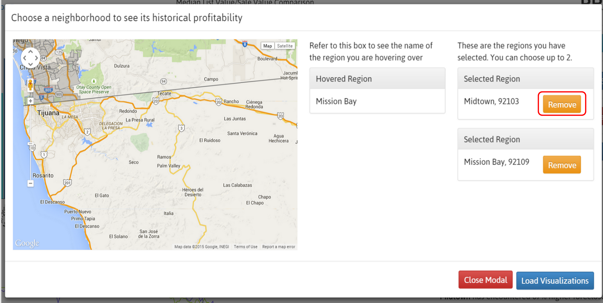
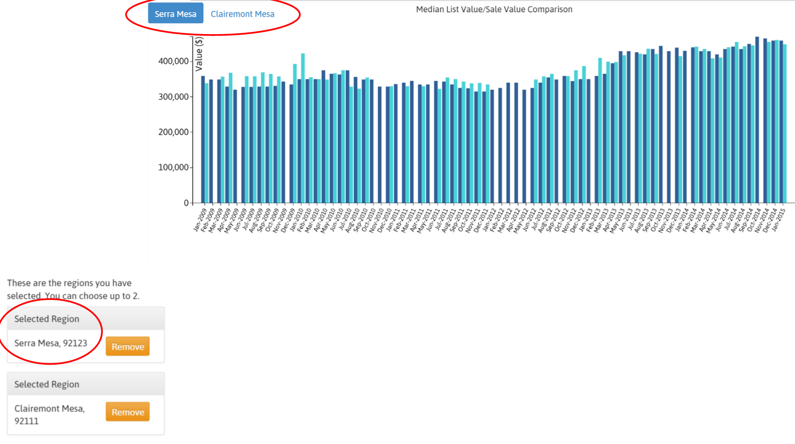

Wireframes
Design Evolution-1st Iteration
2nd Iteration
3rd Iteration
 Visibility of System Status
 Match Between System & the Real World/Help and Documentation  
User Control & Freedom and Error Prevention
Recognition over Recall
About: pricePad is an interactive data visualization tool, designed for homebuyers and home investors, that incorporates UX design principles. Using Zillow housing data, we created useful visualizations that convey historical trends of profitability for different areas in San Diego.
Role: Interaction Designer
Collaborators: Sam Ko, Margin Nguyen, Chen Liao
Type: Website
Tools Used: Balsamiq, Axure, HTML, CSS, Javascript, D3JS, Google Maps API, Zillow housing data from Delphi
Methods: Storyboarding, Low/High Fidelity Wireframes
Mockups: I used Balsamiq and Axure to create low and high fidelity wireframes, which helped us establish the layout of our interface. We had to change our design multiple times, due to the constant discovery of new limitations from our dataset that we were working with. I learned the value of creating wireframes, because they are a great way to get user feedback before taking the time to implement any features.
Design Evolution: For the first implementation of our design, we wanted to place focus on the map, because users have to start by selecting regions on the map in order to feed the appropriate data to the graphs. However, it was taking up too much space, making it difficult for users to accurately read the visualizations and understand them.
We made some changes by removing the map from the visualizations page. We also experimented with a stacked bar chart, which is meant to compare the trends between median list price and median sale price. However, the stacked bar chart was not an effective method for conveying these trends together.
We decided to put the map in a modal, so that users would have the freedom to easily refer back to it at any time. We changed our bar graph so that users could easily perceive the trends between sale price and list price. Removing the map made more room for our visualizations, which improved the comprehensibility and usability of our application.
Visibility of System Status: I often referred to Jakob Nielsen's 10 Usability Heuristics to evaluate the usability of our website. Our visualizations take a while to load, because of the amount of data that's being processed. To prevent users from thinking that our application is broken, it's important to provide them with feedback about how much longer they have to wait. We implemented a loading bar in the map modal, but it isn't always accurate. To address this, we also included a loading message to warn users that loading may take longer than the progress bar suggests. Since the modal closes automatically when the progress bar completes, we also included loading animations for each visualization, in case they haven't finished loading by the time the modal closes.
Match Between System & the Real World/ User Help & Documentation: There were a lot of housing terms used that are not self explanatory for the everyday user. To solve this problem, we created a help modal, where we defined the data presented and explained how it can be useful. By defining these terms in everyday language, users are more likely to understand our application and find it useful. It's important to provide a help resource for users to provide them with clarification when they're confused or not sure what to do. We also used our help modal to guide users through each visualization and tell them how they can interact with them. Each description in the help modal directly maps to the appropriate visualization, so that it's very clear to the user.
User Control & Freedom/ Error Prevention: We limited the amount of regions a user can select at a time, in an effort to optimize the visibility of the visualizations and the loading times. However, we wanted to provide users with the freedom to compare as many areas as possible. Because of this, we created an option for users to edit their selected regions on the map. For error prevention, we enable users to completely clear their selected regions, along with the accompanying visualizations in case they accidentally pick the wrong regions and want to start over.
Recognition over recall: Since we had to remove the map from the visualizations page in order to save space, there's a chance that users may forget what regions they selected. This would make it difficult to draw conclusions about the data they are looking at. To solve this issue, we made sure to display the names of the selected regions on the visualizations page.
Visit pricePad